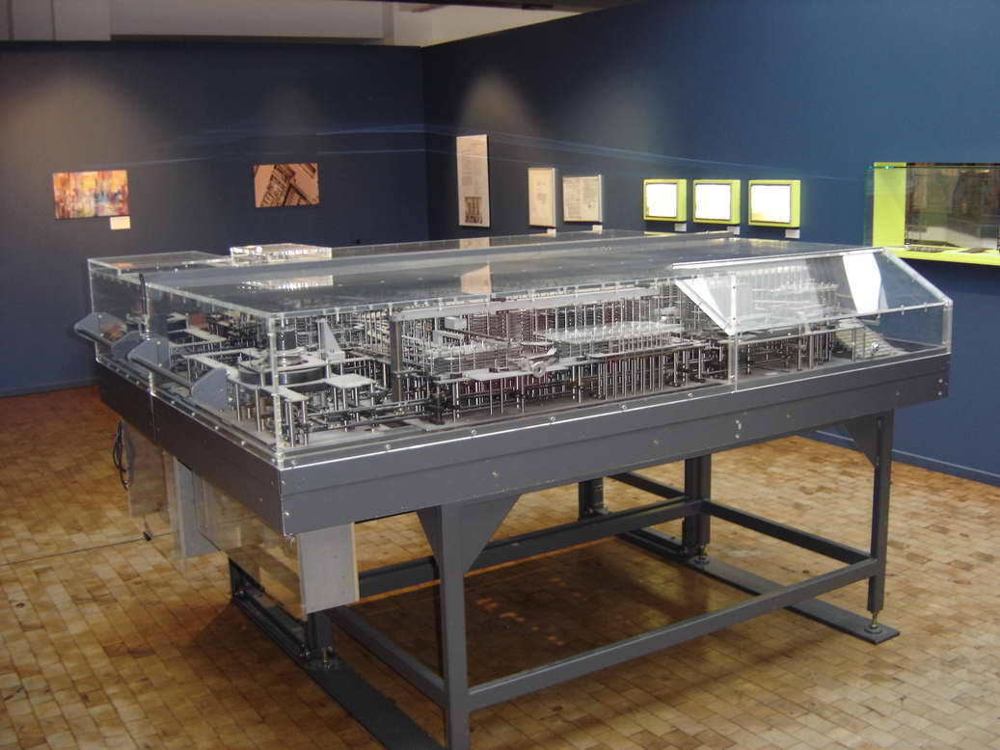

Der Z1, entwickelt von Konrad Zuse zwischen 1936 und 1938, war der erste funktionierende mechanische binäre Rechner der Welt.
Er bestand aus etwa 30.000 Metallteilen, darunter Zahnräder, Wellen und Schalter, und konnte einfache mathematische Berechnungen durchführen.
Trotz seiner mechanischen Natur markierte der Z1 einen Meilenstein in der Geschichte der Informatik und legte den Grundstein für die moderne Computertechnik.
Der Z1 war ein rein mechanisches System, das ohne Elektronik auskam.
Er war in der Lage, Additionen, Subtraktionen und Multiplikationen durchzuführen, was für die damalige Zeit eine bemerkenswerte Leistung darstellte.
Eine der wichtigsten Innovationen des Z1 war sein Rechengerät, das in binärer Form arbeitete, also mittels der Zahlen 0 und 1.
Konrad Zuse baute den Z1 in seinem Elternhaus in Berlin, da er aufgrund von Materialknappheit und finanziellen Einschränkungen während der Zeit des Nationalsozialismus auf improvisierte Lösungen zurückgreifen musste.
Der Rechner war etwa 1,5 Meter hoch und wog rund 1.000 Kilogramm.
Trotz seiner mechanischen Natur war der Z1 in der Lage, einfache mathematische Berechnungen durchzuführen, was für die damalige Zeit eine bemerkenswerte Leistung darstellte.
Obwohl der Z1 nie kommerziell produziert wurde und hauptsächlich als Prototyp diente, hatte er einen erheblichen Einfluss auf die weitere Entwicklung der Computertechnik.
Zuses Arbeit inspirierte spätere elektronische Rechner und trug zur Entstehung der modernen Informatik bei.
Der Z1 wird heute als Vorläufer der heutigen Computer angesehen und ist ein Symbol für die Pionierarbeit von Konrad Zuse.
Nach seiner Fertigstellung wurde der Z1 zunächst in Zuses Wohnung aufbewahrt.
Während des Zweiten Weltkriegs ging der Rechner jedoch verloren.
In den 1980er Jahren baute Zuse den Z1 nach historischen Plänen und Skizzen nach.
Diese Rekonstruktion ist heute im Deutschen Museum in Bonn ausgestellt und gibt Besuchern einen Einblick in die Anfänge der Computerentwicklung.
Der Z1 von Konrad Zuse ist ein Meilenstein der Technikgeschichte und ein Beweis für die visionäre Arbeit des deutschen Ingenieurs.
Seine Entwicklung zeigt, wie frühzeitig die Grundlagen für die heutige digitale Welt gelegt wurden.
Der Z1 bleibt ein Symbol für Innovation und Pioniergeist in der Informatik.